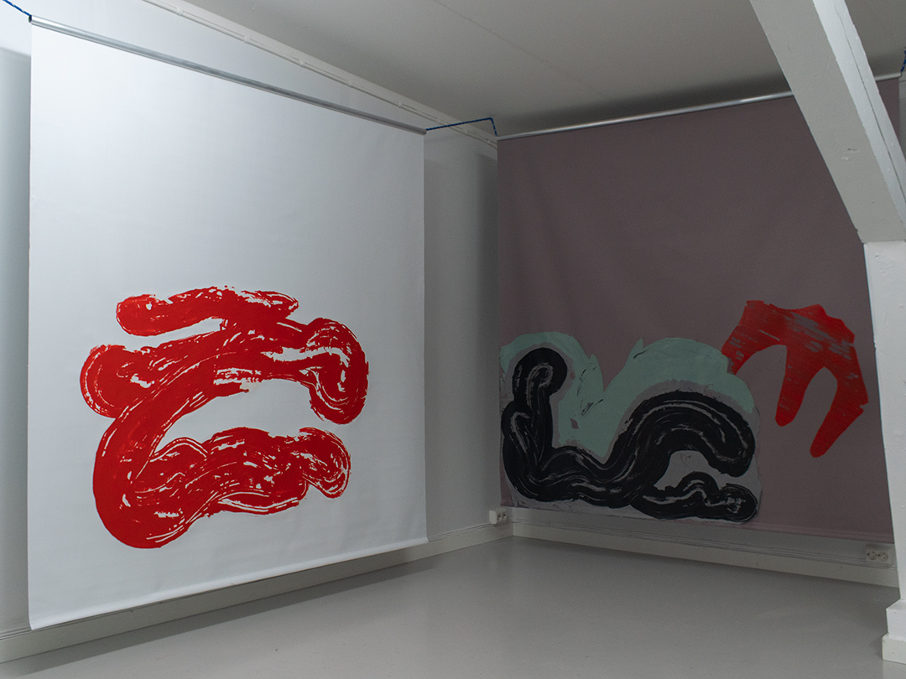
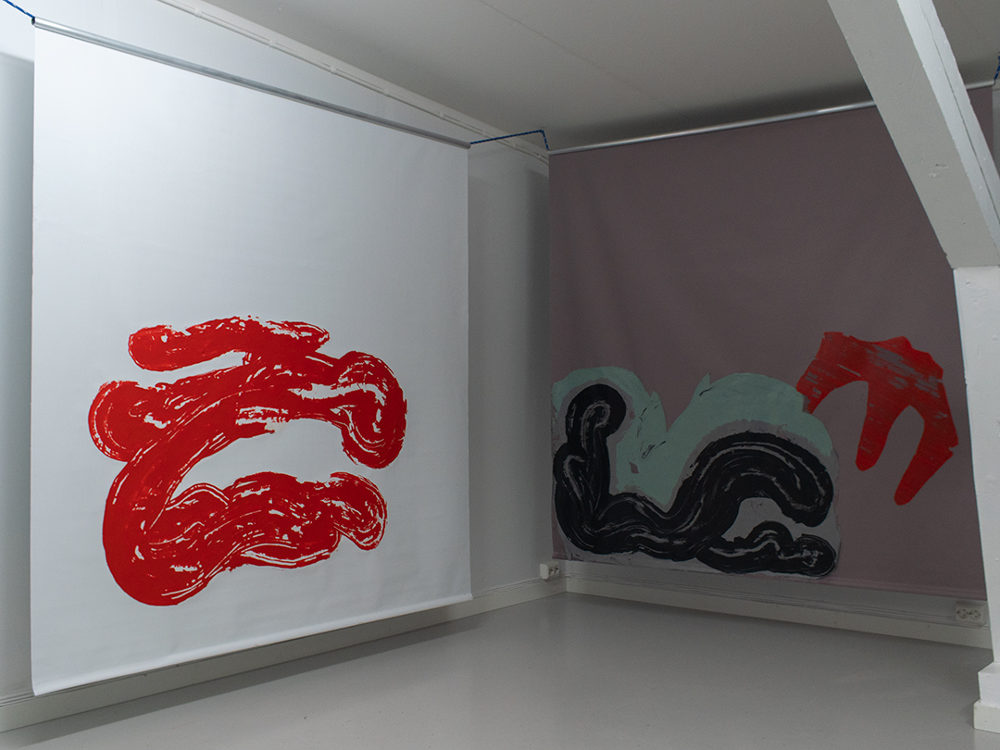

Mirakel
Kristian Øverland Dahl
13.11. - 28.11.2021
Opening on Saturday November 13th, 14-18
Open by appointment
"Mirakel"
Studie av de nære ting
Det kan være vanskelig å holde på ateismen sin når man hele tiden opplever mirakler...
"Miracle"
Study of the near and dear
It can be difficult to keep your atheism when you constantly experience miracles ...

 
